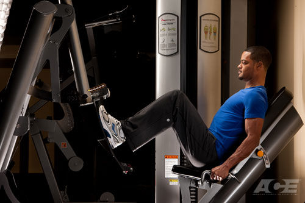
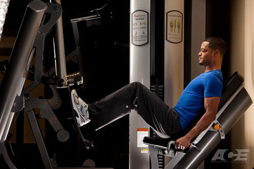

ACE


1. Жим ногами
Спина прижата. Не опускай платформу так глубоко, чтобы таз отрывался.
СтартСтопы на платформе, колени примерно 90 градусов, таз и спина прижаты.
ДвижениеВыжимай ногами, пятки не отрывай, колени идут по линии носков.
ОшибкаНе выпрямляй колени в жесткий замок и не округляй поясницу внизу.
40-60 кгпроба 30-40 кг